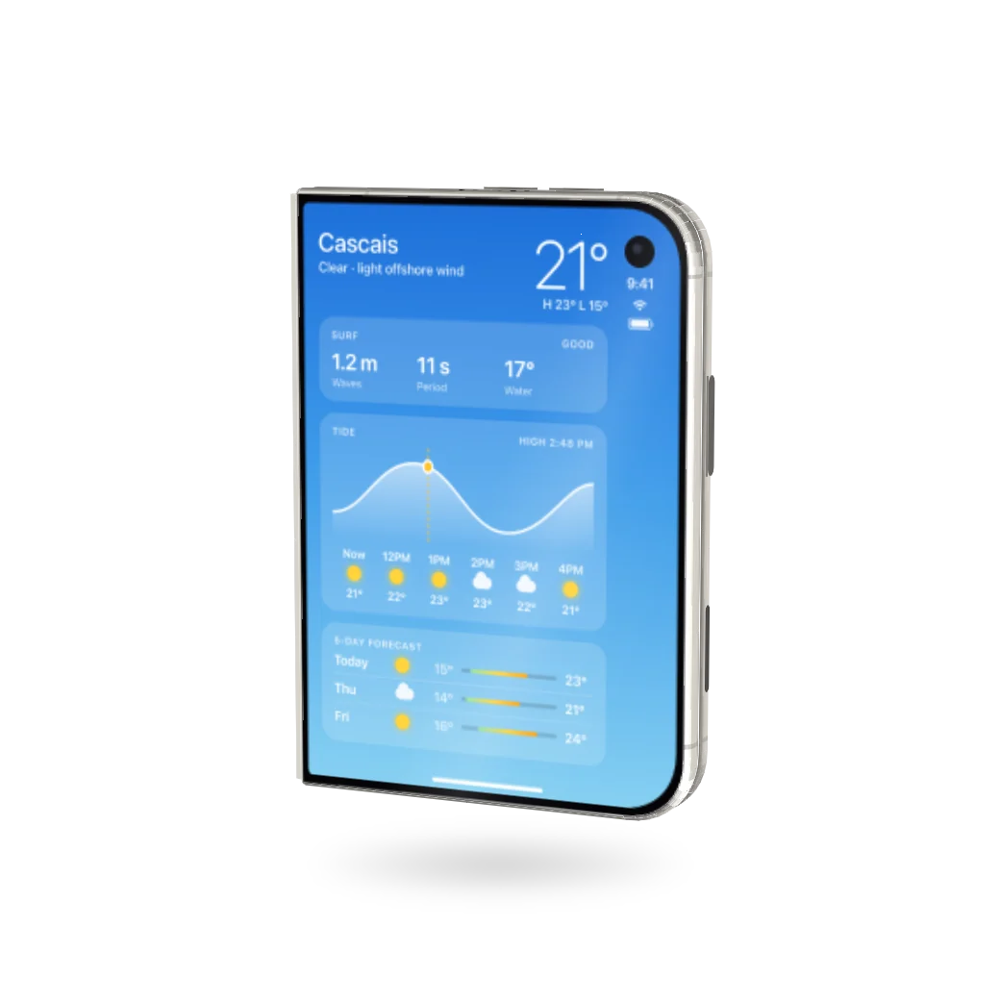
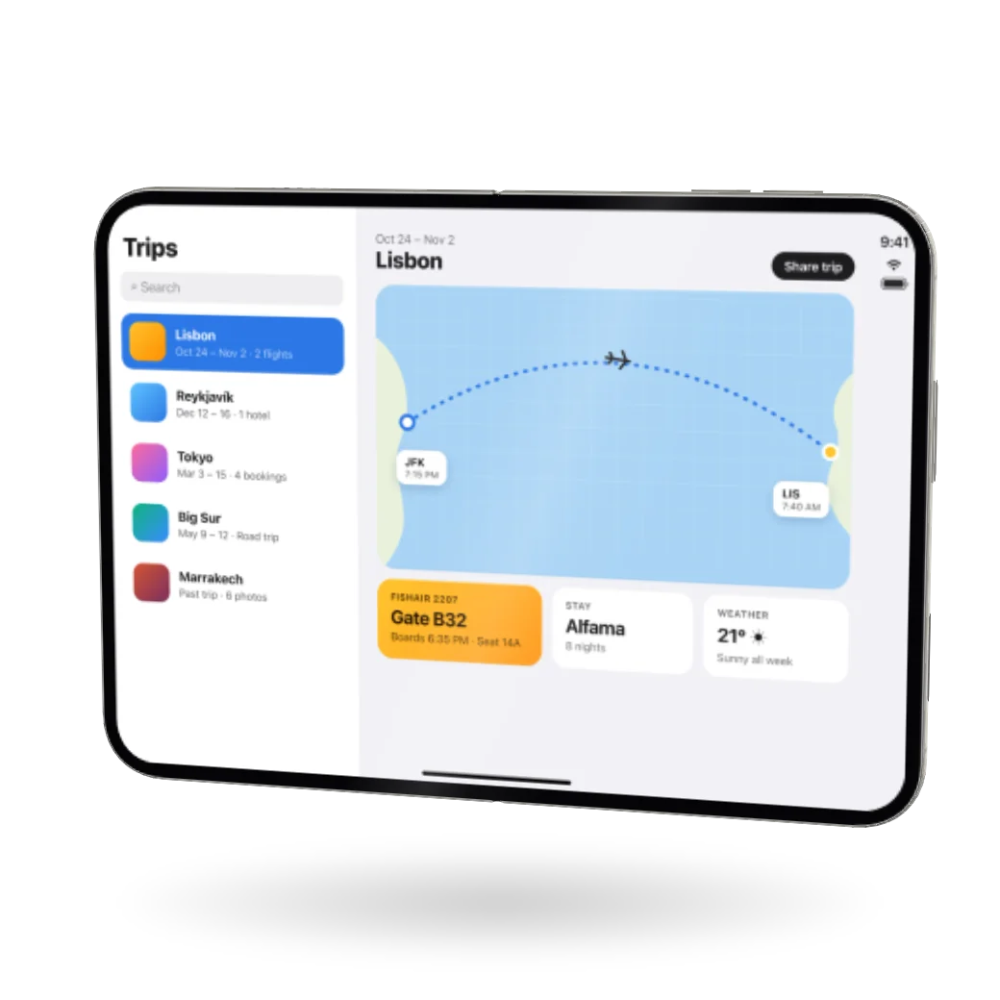
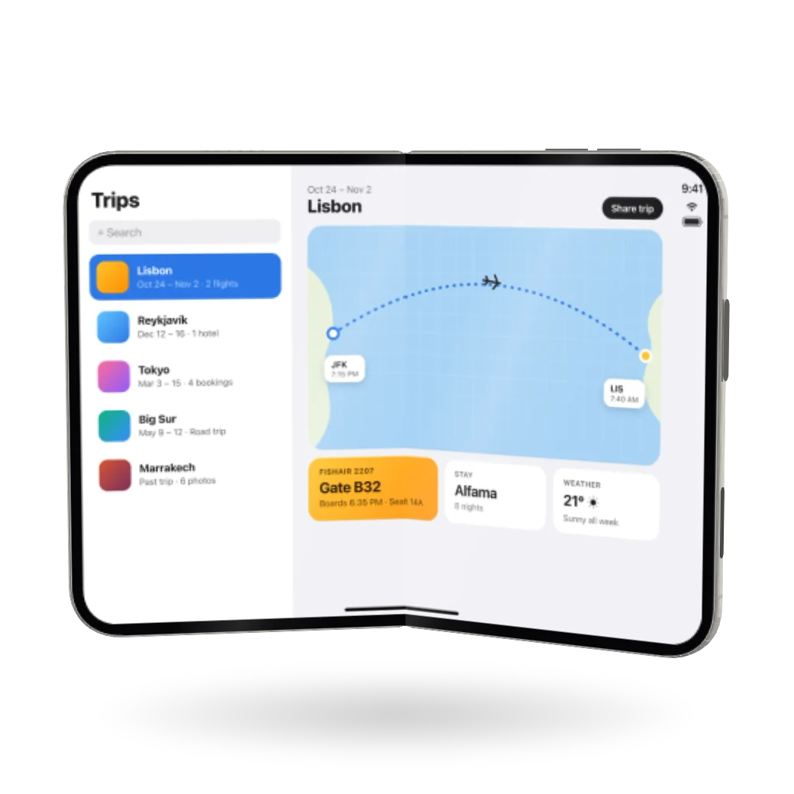
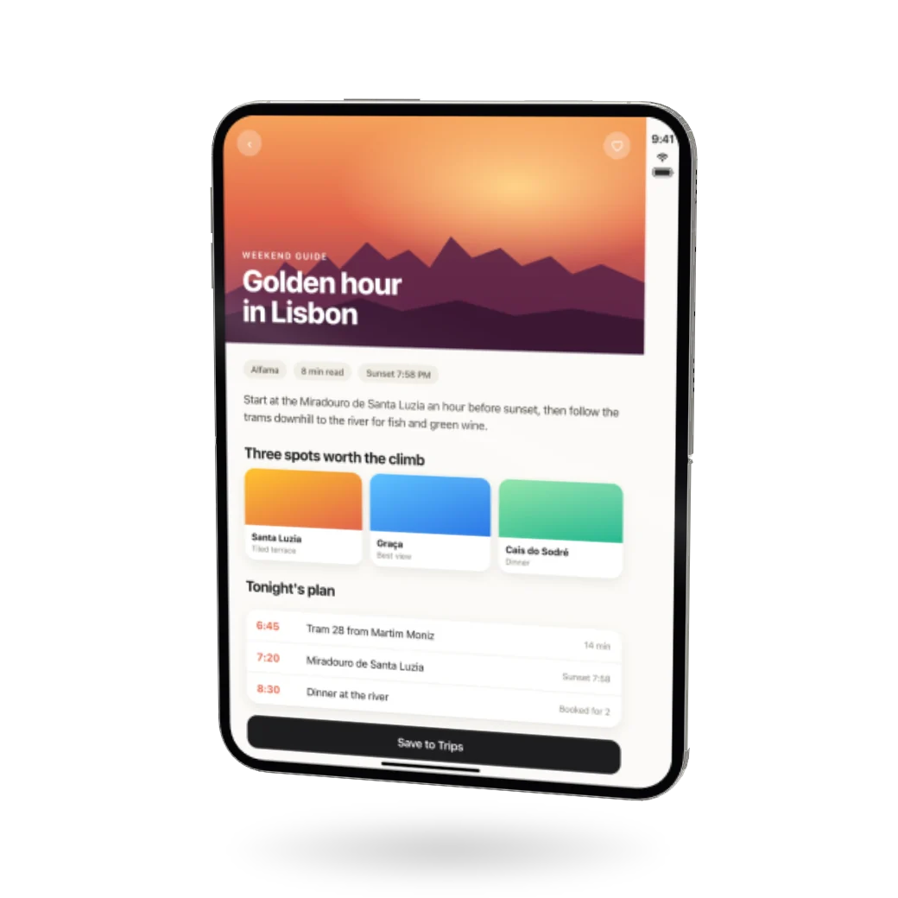
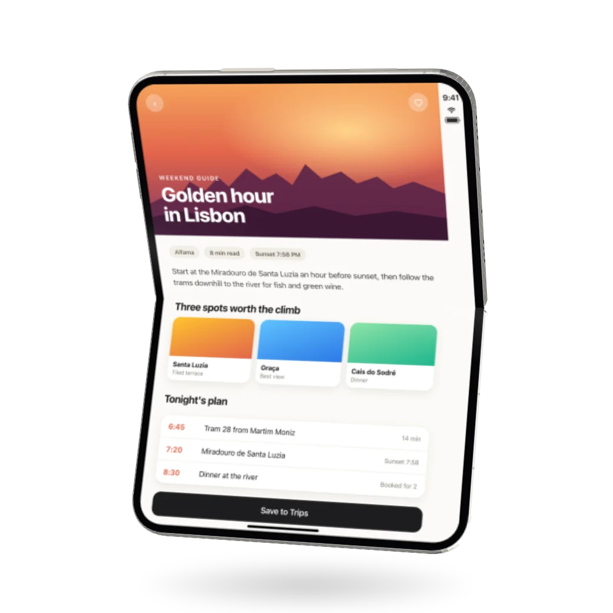
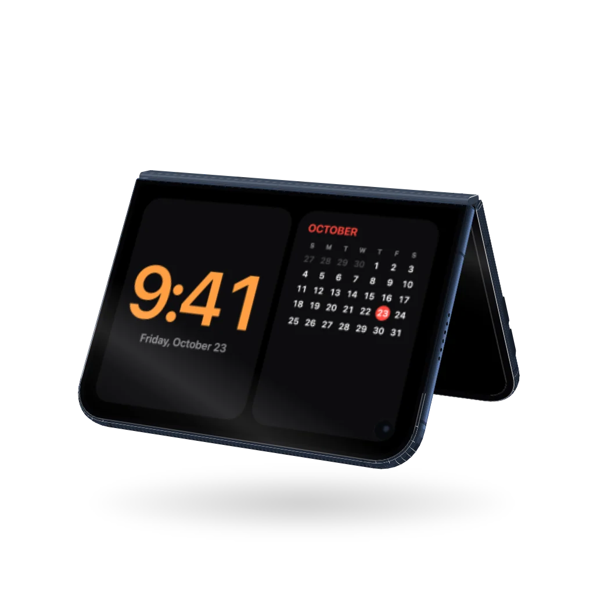
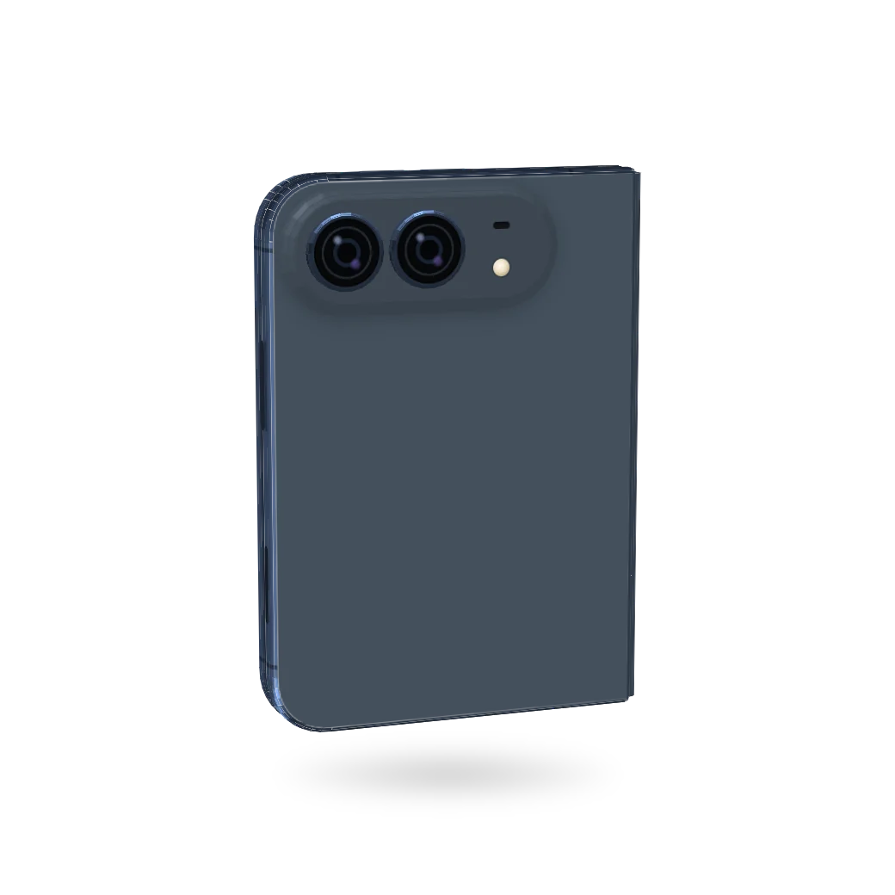

Open-source web component
Unfold
An iPhone Duo you can put on any web page. It opens, folds, turns and stands up like the real one, and shows your own screens.
Drag to turn it. Click to flip it.Drag sideways to turn it. Tap to flip it.
Postures
Seven values for the posture attribute. Fold is the angle between the two halves of the inner screen. Changing it animates from the current pose.

posture="closed"Fold 0°. 84.1 × 117.8 × 11.3 mm, cover screen out.

posture="landscape"Fold 180°. 164.6 × 117.8 × 5.2 mm.

posture="landscape-ajar"Fold 140°. Each half turned 20° towards the viewer.

posture="portrait"Fold 180°, roll −90°. Hinge runs across.

posture="portrait-ajar"Fold 140°, roll −90°.
posture="laptop"Fold 100°, roll −90°. Lower half flat on the table.

posture="tent"Fold 60°, roll 90°. Stands on both outer edges, cover screen out.

yaw="200"Camera plateau at the top outer corner of the right half. Night Sky.
Specifications
Body dimensions from Apple's spec sheet. Band profile, hinge cover, camera, buttons, openings and the cover screen cutout measured from Apple's iPhone Duo AR model.
- Open
- 164.6 × 117.8 × 5.2 mm
- Closed
- 84.1 × 117.8 × 11.3 mmTwo 5.2 mm halves with a 0.9 mm gap, and the hinge cover standing 1.8 mm out of the side.
- Camera
- 55.8 × 21.2 mm plateau, 3.6 mm proudTwo lenses in 16.3 mm rings, 1.9 mm proud of the plateau. Mic and flash at the inner end.
- Cover screen
- 77.2 × 112.3 mm, 6.1 mm camera cutoutCutout centred 7.9 mm from the top and outer edges of the screen. The status column sits directly under it.
- Band
- Titanium, barrel profile0.7 mm inset at the inner screen, 1.3 mm at the back glass. Antenna lines, speaker holes, microphones and USB-C at measured positions.
- Buttons
- Volume on top, Touch ID and Camera Control on the sideVolume 21 to 45 mm from the corner, Touch ID 34 to 52 mm and Camera Control 77 to 94 mm down from the top.
- Hinge
- Fold axis 0.45 mm in front of the inner screenBoth screen halves overlap 0.6 mm past the fold, so the picture is continuous at every angle.
- Finishes
- Star White and Night Sky
Install
One ES module, 60 KB, no dependencies, no build step. Load it from unfold.foo, or download unfold.js and host it yourself.
Script tag
<script type="module" src="https://unfold.foo/unfold.js"></script>
Element
inner and cover take an image or video URL. The inner image spans both halves. A portrait image on the inner screen is rotated 90° to fit it.
<unfold-device inner="open.png" cover="closed.png" posture="landscape-ajar" finish="night-sky" interactive> </unfold-device>
JavaScript
Every method returns a promise that resolves when the move ends.
const phone = document.querySelector('unfold-device');
await phone.setPosture('closed');
await phone.setPosture('laptop');
await phone.animateTo({ yaw: 160, pitch: 14 }, { duration: 1200 });
phone.addEventListener('change', e => console.log(e.detail.fold));API reference
Attributes
| Name | Values | What it does |
|---|---|---|
posture | closed, landscape, landscape-ajar, portrait, portrait-ajar, laptop, tent | How it is held. Changing it animates to the new posture. Default landscape. |
inner | URL | Image or video on the big inside screen. |
cover | URL | Image or video on the outside screen. |
inner-portrait | URL | Optional upright picture for the inner screen when the phone is on its side: portrait, portrait ajar and laptop. Cross-fades in between 30° and 60° of roll. |
cover-landscape | URL | Optional sideways picture for the cover screen when the phone is on its side, as in tent. |
finish | star-white, night-sky | The colour of the frame, back and hinge. |
fold | 0 to 180 | Angle between the two halves of the inner screen. 0 is shut, 180 is flat. |
yaw | degrees | Turns it left or right. |
pitch | -90 to 90 | How far above it you look from. Below zero looks up at it. |
roll | degrees | Turns it on the page. |
interactive | present or not | Drag to turn, click to flip, arrow keys to turn, F to fold. |
click | flip, fold, none | What a click does when it is interactive. Default flip. |
logo | URL | A logo in the middle of the back. None by default. |
zoom | number | Scales the phone within the element. Default 1. |
shadow | none | Hides the shadow underneath. |
label | text | What screen readers call it. Default "iPhone Duo". |
Methods and properties
| Name | What it does |
|---|---|
setPosture(name, options) | Moves to a posture. Same as setting the attribute, but returns a promise. |
open(options) | Unfolds it flat. |
close(options) | Folds it shut. |
toggle(options) | Opens it if it is mostly closed, closes it otherwise. |
flip(options) | Turns it around to show the other side. |
spin(turns, options) | Spins it one full turn, or turns turns. Negative spins the other way. |
animateTo(target, options) | Animates any of fold, yaw, pitch and roll. Options are duration in ms, easing (a CSS easing name or cubic-bezier()) and delay. Resolves true when it finishes, or false if something else moved it first. |
stop() | Stops every animation where it is. |
setScreen(name, src) | Puts a URL, File or Blob on inner or cover. Handy for a file picker or a drop. null clears it. |
fold, yaw, pitch, roll | Read or set the pose right away, with no animation. |
posture, state | The last posture asked for, and the current pose as one object. |
Animations respect reduced motion: they jump straight to the end unless you pass force: true.
Events
| Name | When |
|---|---|
change | Every time it moves. event.detail is the pose: { fold, yaw, pitch, roll, posture }. |
activate | On a click, Enter or Space when it is interactive. event.detail.action says what it did. |
Styling
| Name | What it does |
|---|---|
width, height | The element is a block, 16:10 by default. Size it however you like and the phone scales to fit, in every posture. |
--unfold-metal | Colour of the frame and buttons. Overrides the finish. |
--unfold-back | Colour of the back glass and camera plateau. |
--unfold-hinge, --unfold-antenna | Colours of the hinge cover and the antenna lines. |
--unfold-shadow | How dark the shadow is, 0 to 1. Default 0.3. |
::part() | stage, shadow, screen, back-glass and camera. |
Custom finishes and postures
Both are plain objects. Add one, then use it by name.
import { addFinish, POSTURES } from 'https://unfold.foo/unfold.js';
addFinish('sage', { metal: '#a9b7a5', back: '#c3cdbf', hinge: '#97a393', antenna: 'rgba(60, 70, 58, .4)' });
POSTURES.reading = { fold: 120, roll: 0, anchor: 0.5, lean: 0, yaw: -20, pitch: 10 };<unfold-device finish="sage" posture="reading"></unfold-device>
Implementation
- About 640 flat polygons, each a DOM element with one
matrix3d, in a singlepreserve-3dcontainer. No canvas, no WebGL: screens stay sharp at any size and videos play natively. - Moves between postures turn both halves at a steady rate under one easing curve, while scale and centre glide to the target framing.
- Built when within 300 px of the viewport, idle when off screen. 60 fps in Chrome and Safari, desktop and mobile. On touch, horizontal drags turn the phone and vertical swipes scroll the page.
- Free to use under the MIT license. Not affiliated with Apple. iPhone and iPhone Duo are trademarks of Apple Inc.